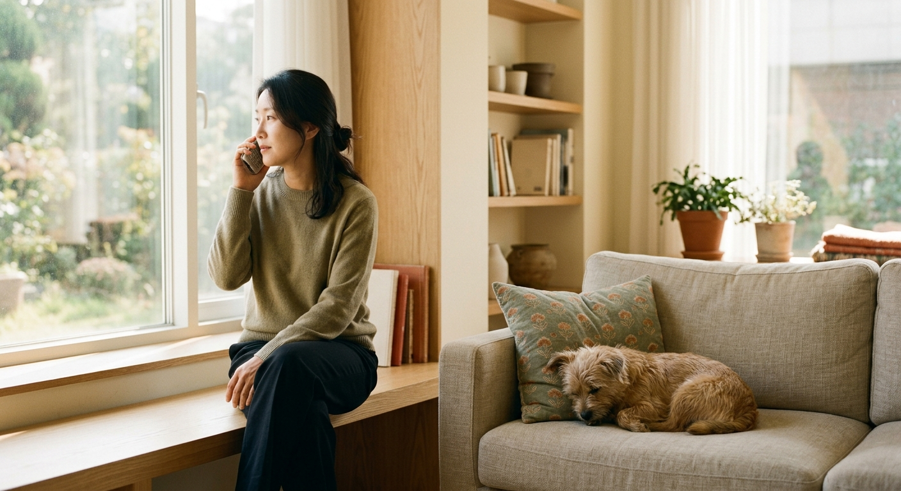
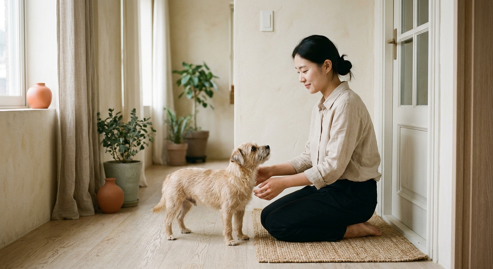
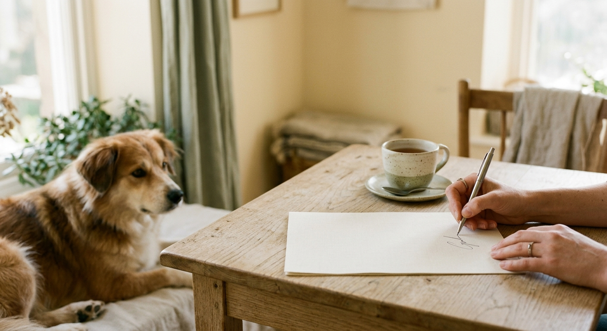
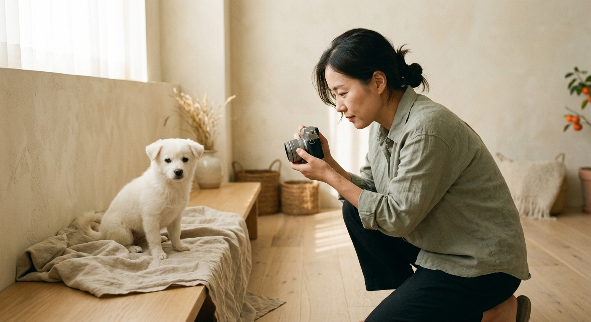
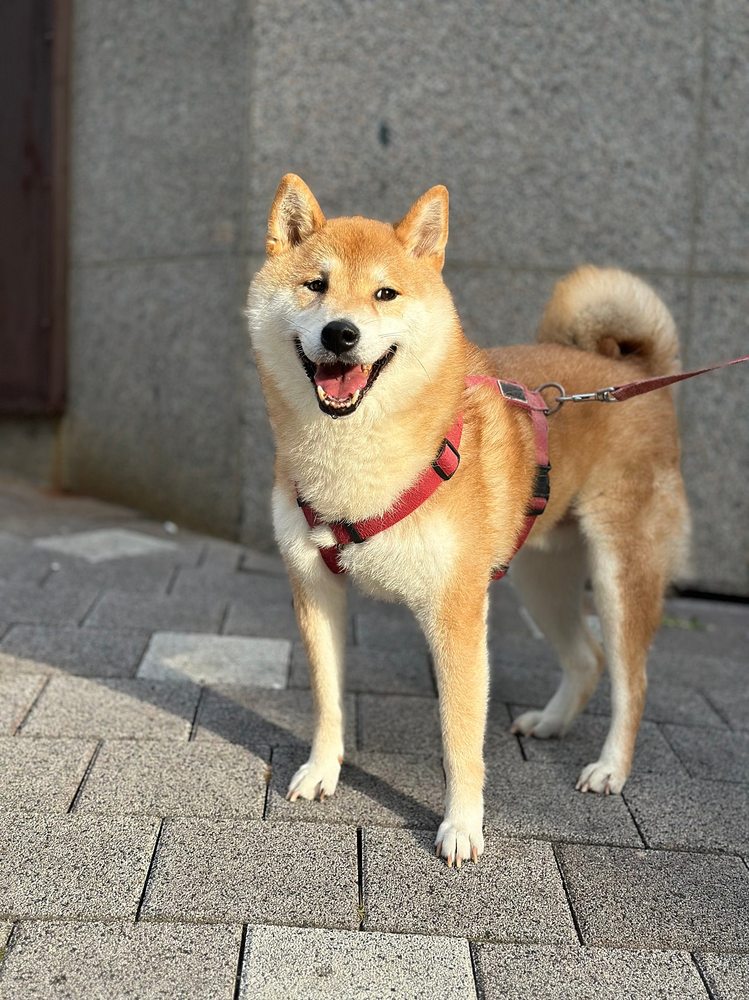

입소 가능 여부
나이, 질병, 공격성·관리 난이도, 현재 보호소 빈자리를 전화로 확인합니다. 부산이라도 당일 입소가 약속되지는 않습니다.
부산 · 유기견센터 · 강아지보호소
부산에서 강아지·고양이 파양(입소)을 고민하실 때, 먼저 확인할 것은 입소 가능 여부와 상담 방법입니다. 포켓몽보호소는 0505-707-0401로 나이·건강·사정을 듣고 빈 보호 공간을 확인한 뒤, 픽업·방문·준비물을 안내합니다.
입양을 찾으시는 분께 — “오늘도, 한 아이를 기다립니다.” 입양 아이들을 보신 뒤 0505-300-7779로 입양 상담을 요청해 주세요.
파양을 검색하신 분께 필요한 순서만 정리했습니다.
나이, 질병, 공격성·관리 난이도, 현재 보호소 빈자리를 전화로 확인합니다. 부산이라도 당일 입소가 약속되지는 않습니다.
0505-707-0401로 통화 가능 시간에 연락해 주세요. 사진·동영상을 미리 보내 주시면 건강·체급 파악에 도움이 됩니다.
입소 확정 → 동의서·비용 안내 → 배치 시설에서 보호 → 사진·영상 기록 → 입양 공고. 아래에서 자세히 설명합니다.
유기견센터·강아지보호소를 찾다가 오신 분도 같은 흐름으로 진행됩니다.
입소가 확정되면 소형견·대형견·노령견·고양이 등 조건에 맞는 보호 시설로 배치합니다. 어느 시설에서 지내는지, 방문·픽업 일정은 0505-707-0401 상담 후 개별 안내합니다.
방문은 모두 예약입니다. 입소·입양 모두, 전화로 일정과 목적을 맞춘 뒤 안내받은 장소로 오시면 됩니다. 반려동물 동반 시 케이지·목줄·배변 패드를 지참해 주세요.
직접 오기 어려우면 담당자 픽업을 상담합니다. 부산 전역(해운대·수영·동래·연제·남구·동구·중구·서구·사하·강서·북구·사상·금정·기장)과 김해·양산 등 인근도 거리·일정에 따라 조율합니다. 픽업비는 받지 않습니다. 다만 아이 건강, 운송 가능 여부, 센터 일정에 따라 픽업이 어려울 수 있습니다.
비용·동의 사항은 입소 동의서 작성 전 상담에서 아이 상태에 맞게 안내합니다.
REHOMING
개인 사정으로 더 이상 함께하기 어려울 때, 아이에게 지낼 곳과 새 가족을 찾는 절차입니다. 부산에서도 전국과 같은 순서로 진행하며, 입소 상담은 0505-707-0401입니다.
입소는 무조건 되지 않습니다. 아이마다 필요한 공간이 있어, 센터 여유와 건강·성격을 본 뒤에야 결정됩니다.
새로운 가족을찾아 주는 일은아이에게 줄 수 있는마지막 선물입니다.

출산 전후로돌보기 어렵거나아기와 함께 두기불안할 때

함께 살다동물 알러지가 나타나생활이 어려워졌을 때

해외로 데려갈 수 없거나이사한 집에서함께하기 어려울 때군 입대와 오랜 부재도같은 경우에 가깝습니다.

보호자가 아프거나연로해졌을 때아이도 나이가 들어집에서 돌보기 어려울 때
상담부터 입양 공고까지, 순서는 같습니다.

나이, 지역, 질병 유무.지금 처한 상황을 먼저 듣습니다.지낼 공간이 있어야입소 여부가 정해집니다.

센터에 직접 오시거나담당자가 아이를 모시러 갑니다.부산·전국 어디든픽업 비용은 받지 않습니다.

비용과 동의 사항을 안내하고확인한 뒤에 동의서를 작성합니다.금액은 아이 상태에 따라상담에서 안내합니다.

건강 상태와소형견, 대형견, 노령견을 보고아이가 지낼 센터를 정합니다.

입소 뒤에는사진과 동영상을 남깁니다.새 가족이 아이를알아보기 위한 준비입니다.

입양 공고로아이의 이야기를 전합니다.그 공고를 보고새로운 가족이 만나게 됩니다.
산책·식사·미용 등 보호소 일상 기록입니다.





FAQ
CONTACT
입소(파양)와 입양 모두 전화로 예약 후 진행합니다.